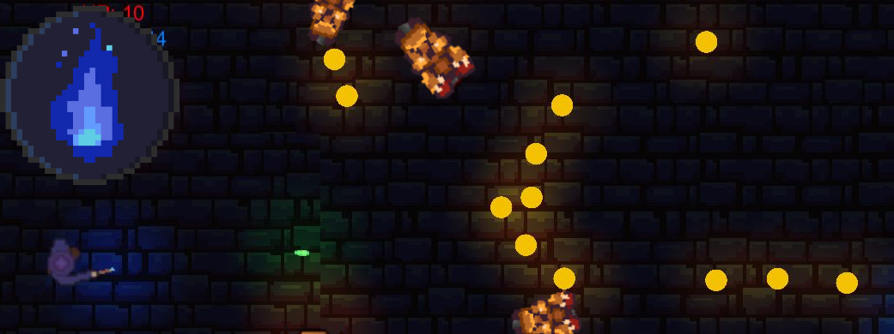

Week 3 - First Demo

Shortly after the presentation, the group put together a competence matrix and started dividing responsibilities within the group.
As I had previous experience with Unity I was charged mainly with coding. The first thing I started working on was the character controller.
As I had previously worked on a project with hotline miami type gameplay (See my “top down shooter game” project from back in 2019)
With the first demo showing taking place on Thursday, the group had a meeting on Wednesday to put together the demo. When doing this, however, the group encountered several issues such as the player stuttering when moving as well as the overall graphics looking a bit… stale(sorry project group). I took it upon myself to do a bit of a last minute crunch to try and spice up the game a bit before the demo. I managed to fix the movement stuttering by removing a NavMesh agent placed on the player character and also added a few experimental 2D lights that are available in the Unity URP (Universal render pipeline) to the various projectiles and spells which made the game a bit more flashy.
During the demo showing the game was well received, and many students who tried out our project were really excited by our game concept as well as our current visuals and gameplay.